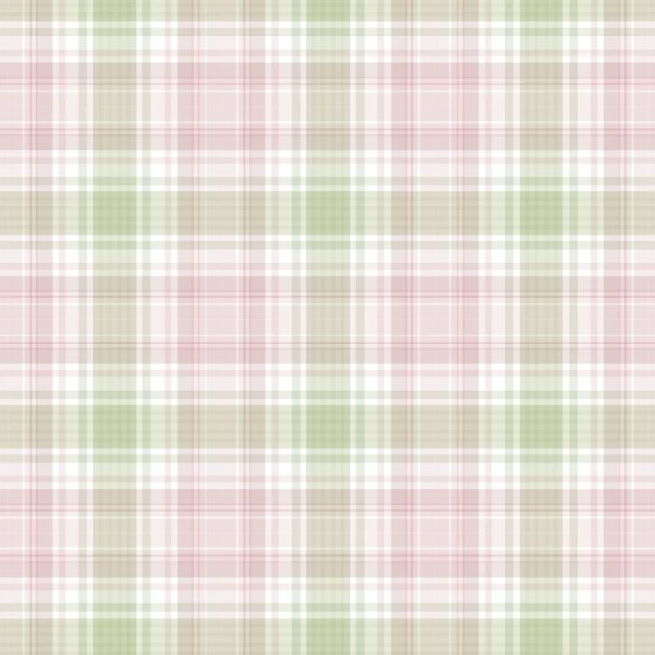
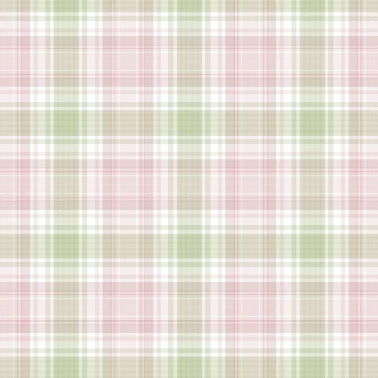

Selamat datang di website saya. Pada website kali ini, saya akan membahas mengenai Sustainable Development Goals (SDGS)🎯✨ dan bentuk-bentuk kerjasama🤝🧩 di tengah arus globalisasi🌎🌟. Dimana melalui kerjasama bilateral, regional, hingga multilateral, Indonesia🐦🔥 aktif berkontribusi untuk menciptakan dunia🌍 yang lebih baik✨👍. Baik dalam aspek sosial, ekonomi, dan budaya. Dimana untuk mencapai SDGs dibutuhkan kebersamaan🤝 antar negara, untuk saling mendukung satu sama lain. Sehingga bisa membangun dunia yang terhindar dari kemiskinan, kelaparan, polusi udara, pendidikan yang tidak layak, dll.
Melalui website ini, saya ingin berbagi informasi, data analisis, dan penjelasan seputar SDGs terutama SDGs ke-4 (Pendidikan yang Berkualitas) dan bagaimana cara Indonesia berperan aktif dalam memenuhi SDGs tersebut melalui kerjasama dengan negara lain, serta kondisi sekarang di Indonesia mengenai kondisi SDGs ke-4
Semoga melalui website ini dapat menambahkan pemahaman kalian tentang SDGs dan bentuk-bentuk kerjasama. Selamat membaca dan semoga bermanfaat!‧₊˚🖇️✩ ₊˚📖
⋆˚꩜｡-Belle (16/9.5)
dan Berdampak Bagi Sesama!✨🤝🎯